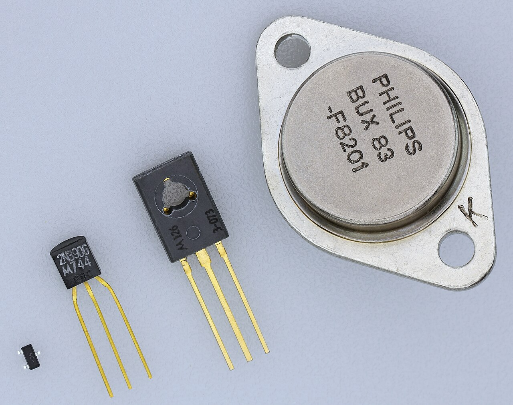
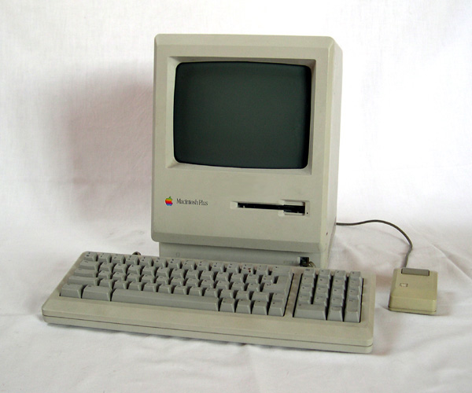

wikipedia
"Blaise Pascal uppfann 1642 den första mekaniska räknemaskinen, vilken kunde addera och subtrahera och kan ses som en föregångare till datorn. Tre decennier senare konstruerade Gottfried Wilhelm von Leibniz en maskin som dessutom klarade multiplikation och division."

wikipedia
"Den första generationens datorer var baserade på vakuumrör. När John Bardeen, Walter Brattain och William Shockley vid Bell Labs uppfann transistorn 1948, utgjorde detta grunden för den andra generationens datorer."

wikipedia
"Integreringstrenden fortsatte och vid 1980-talets början hade man nått vad som brukar kallas VLSI (Very Large Scale Integration, "mycket storskalig integrering") med miljontals transistorer på ett integrerat kretskort. Detta gjorde att datorerna började bli tillräckligt små för att användas privat och detta gav upphov till hemdatortrenden. År 1977 släppte Commodore en 8-bitars dator (PET) och ungefär samtidigt släppte Apple sin Apple II. 1981 släppte IBM persondatorn IBM PC med en öppen standard för instickskort och andra komponenter. Några veckor innan släpptes dock en annan PC vid namn Sirius I och som var skapad av Chuck Peddle. IBM PC är dock den dator som blev känd och inom kort växte det fram en industri för tillverkning av vad man kallade IBM PC-kompatibla persondatorer. År 1984 fick denna en konkurrent från Apple (Macintosh 128k) som hade ett för den tiden väldigt lättanvänt grafiskt gränssnitt som ännu har många likheter med moderna operativsystem."